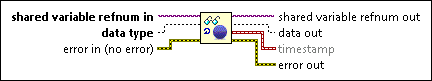
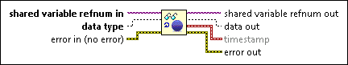

Scanned Variable Read Function
Owning Palette: I/O Variable Functions
Requires: Base Development System
Reads from an I/O variable or I/O variable container using scanned access.

 Add to the block diagram Add to the block diagram |
 Find on the palette Find on the palette |
Owning Palette: I/O Variable Functions
Requires: Base Development System
Reads from an I/O variable or I/O variable container using scanned access.

| Add to the block diagram |
Find on the palette |
 |
shared variable refnum in is the reference to the shared variable or I/O variable container. You can right-click this input terminal and select Create»Control or Create»Constant to create this reference. You then can click the control or constant and select Browse to display the Browse Variable Objects dialog box. You also can find variable references programmatically. This input terminal accepts string values too. If you know the exact NI-PSP variable address, you can type the address into a string control and directly wire that string control to this input terminal. |
 |
data type specifies the data type of the shared variable or I/O variable container. For I/O variable containers, you must specify an array data type. This input is available only if the data type has not been previously specified. You can specify a data type by placing a checkmark in the Specify Data Type checkbox on the Configuration page of the Properties dialog box for the variable refnum. If you specify the data type upon opening the connection, this terminal is unavailable on subsequent read and write functions. |
 |
error in describes error conditions that occur before this node runs. This input provides standard error in functionality. |
 |
shared variable refnum out is the reference to the shared variable or I/O variable container. |
 |
data out is the data read from the shared variable or I/O variable container. |
| timestamp is the timestamp indicating when the current data was written to the shared variable. This output is available only if you place a checkmark in the Read Timestamp checkbox on the Configuration page of the Properties dialog box for the variable refnum. I/O variable containers do not support timestamps. | |
 |
error out contains error information. This output provides standard error out functionality. |